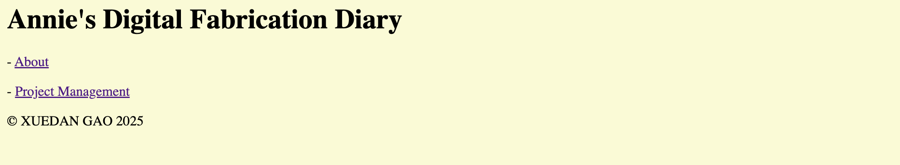
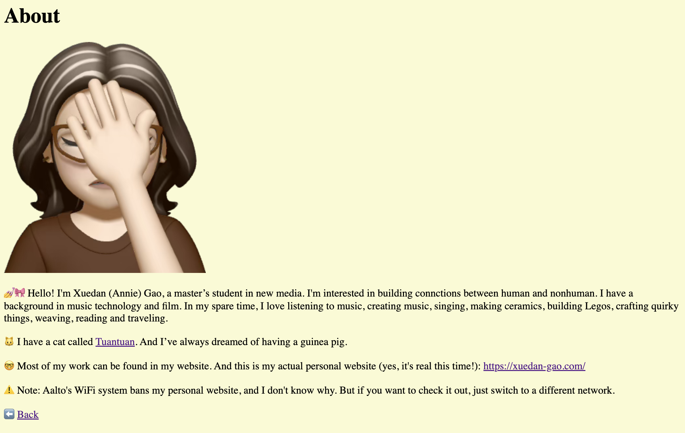
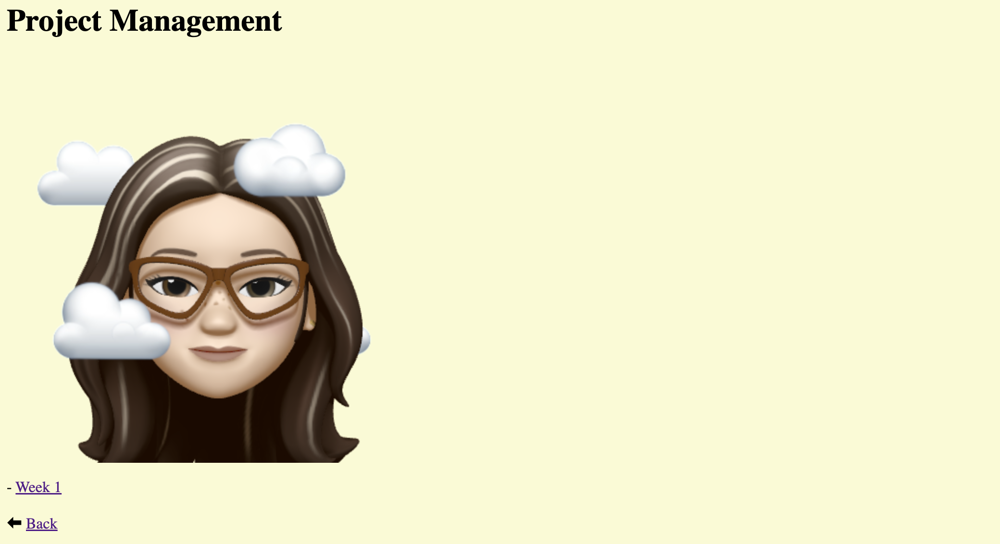

This is my github repo: https://github.com/dbb1019/Digital-Fabrication
  Last week, I learned about building websites with GitHub Pages. This experience has introduced me to the basics of using Git for version control, which has proven invaluable in tracking changes and collaborating on different tasks. By pushing commits regularly and managing branches, I have developed an understanding of how to keep my project organized and efficient. Moreover, I learned HTML and CSS, which has allowed me to structure my website’s content and design its visual elements. And it helped me bring my ideas to life.
For this website, I use VS Code to create HTML files to code everything and functions on the page and I also create a CSS file to create a template for all the pages to align items in the same way. I first created a GitHub repo and used the command line to open everything in VS Code. Then I downloaded an extension for VS Code to visualize HTML pages in real-time locally.
After finishing the HTML page, I used Git commands in the terminal to commit my changes. First, I ran git add . to stage all the updated files, including the HTML and CSS files. Then I committed these changes with git commit -m "xxx", which allowed me to add a descriptive message for the changes I made. Finally, I pushed the updates to the remote repository using git push origin main. Throughout this process, I have also become more aware of how important proper documentation is for any success of the projects. Writing clear commit messages and maintaining a well-structured repository ensures that future modifications are easier to implement.
I want to explore more styling techniques and incorporate frameworks or templetes that can make my website look more professional and visually appealing.
In the coming weeks, I want to experiment with JavaScript, I hope to add interactive features (^_^).
⬅ Back
🏠 Home
© XUEDAN GAO 2025